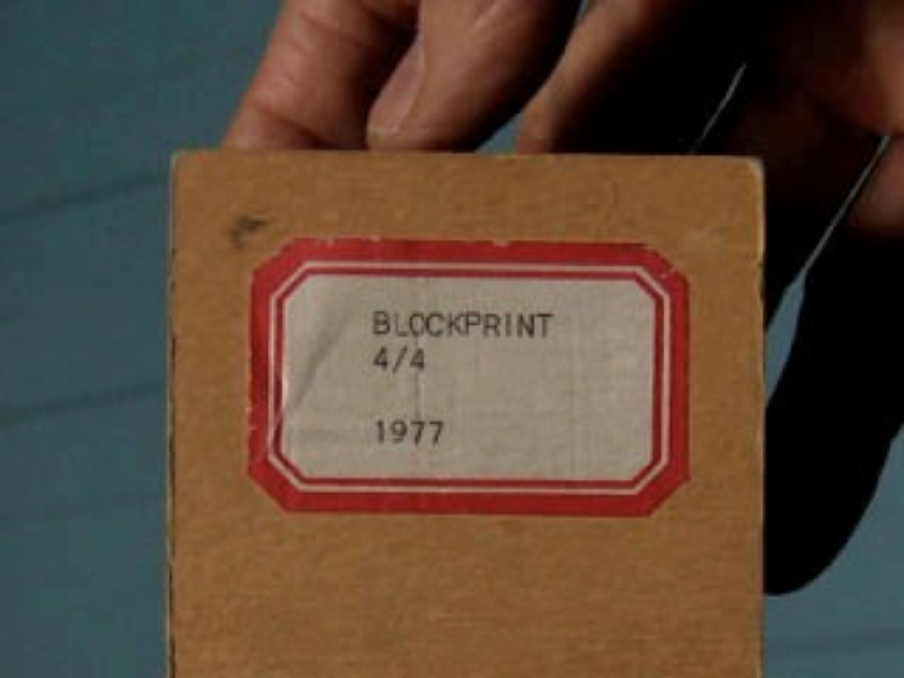
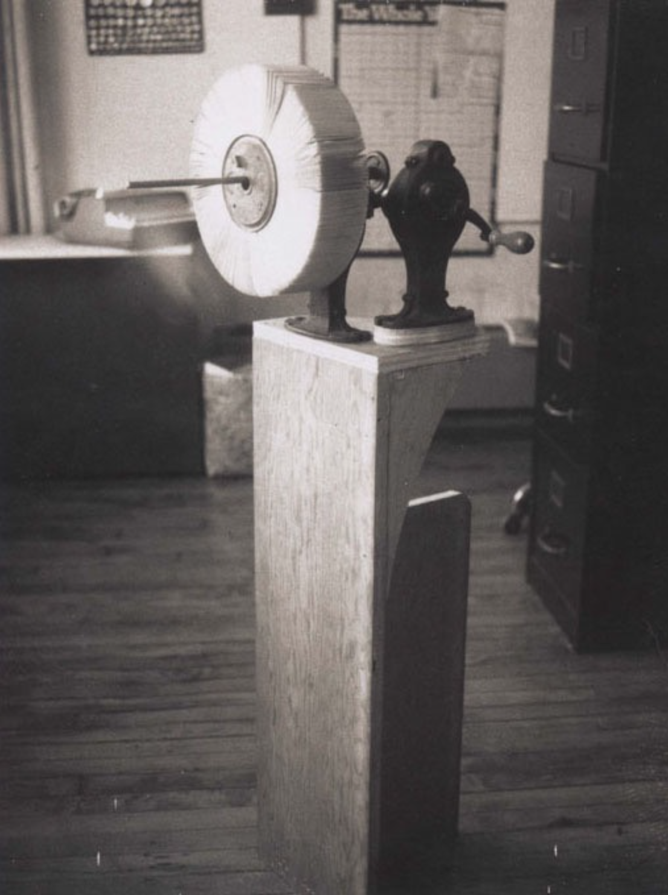

Missing Observer Studies is a time focused online cinema/journal/diary dedicated to the elongation, suspension, and untimeliness of time. Each issue is treated with care, and published indeterminately per the means and welfare of all parties involved.
huner.francis@gmail.com
ig: @huner_francis
©2020-2021
George Griffin, Block Print
1977, 16’01 *16mm color-b & w / silent
(digital: MP4/720p; From: January 20th, 2021)
A Walk Around the Block
by Micah H. Weber
(1) A walk around a block of buildings aiming with the camera at the ridge between the sidewalks and the buildings. At 24 frames / second this event lasted five minutes.
(2) Repetition of (1). Holding the camera aside, at 12 frames / second. This sequence is then copied onto negative, then the original and negative are superimposed on top of each other with an offset image and are printed on an optical printer with reverse film.
(3) The negative copy (see 2) feeds a microfilm copier which produces a continuous paper output. This roll is then cut with a cutter and reconstituted by re-filming image by image. (Page mounted on a wheel of a mutoscope).
(4) Walk around a block (see 1), pointing the camera at the photocopied pages of the mutoscope in the foreground in front of the ridge of sidewalks and buildings in the background.
—GG
...
Much like the short description above, George Griffin’s Block Print (1977) begins with twenty four brief seconds of a finger tracing/ drawing the path he will take us on over the following sixteen minutes. This gesture like the film itself doesn’t over intellectualize this path, or attempt to tell us anything outside of the information it provides. To say Block Print is a film about process—a trip around the corner, or a series of easily defined parameters giving the filmmaker a space to work—confirms the sentiment of these opening traces, and yet it also belies the tracing, cutting, and drawn architecture of the moving images this film navigates.
Starting on the corner of Lafayette and Great Jones Street, we journey over the next five minutes in a counter clockwise northwesterly direction towards Broadway. The camera moves in a slightly jerky gate, gently listing on an axis attempting to maintain a perpendicular focus: the target is an innocuous block of buildings. Turning on E. 4th Street, and then back to Lafayette, from here we follow the geometry of 90 degree angles—completing a rectilinear fulfillment of Block Print's nascent opening. Taken in pieces, we as viewers sit with the time it takes to realize the traced imprint a map can provide in whole.
The black and white film stock provides these images in a high contrast rendering similar to the easily read signage on the storefronts and entry-ways depicted. Part (2) repeats the first with the camera on its side. The black and white is super imposed with additional optical print processing—the material of the film drawing itself out, threatening to get in the way of illusory space—as if part (2) precedes (1) by way of the map preceding the city block… but perhaps this is another question for a different time.
In part (3) we are given a breakdown of how these images are to be processed and alienated from themselves. A large scale printer produces a roll of paper where the results of part (1) and (2) are made into a spool for cutting individual frames. Quickly we move from a time of documentary into a time of documents. This section of Block Print begins in a similar way to part (1): we are presented with the organization of an image, its schematic apparatus, and the mechanisms that created it. What follows provides us with a different kind of tracing from what came before.
Continuing with part (3), now in color, we are presented with a cutting gesture where frames are cut from the spool and photographed in simultaneity. We see two frames whiz by at twenty four per second for every cut made. The high-speed cutting is the first moment we begin to see a more straightforward reading of animation in Block Print . Which is worth thinking about. In order for animation to render itself legible, an obtuse, nearly long winded path must first be charted and made invisible. Likewise, Griffin’s cutting imitates the shutter we as viewers are not aware of when viewing moving images—the cutter/shutter becomes a frame within a frame while mirroring the hand slowly tracing the contours of a city block.
On the unwinding spool of paper, the printed city block animates a strange sense of perspective and time: we are not only privileged by this vantage point to see a singularly framed image in animation, we are also privy to the frames near and adjacent to them linearly. This pointed gaze is where animation wrests images from their privation in stillness and tempts artifice to challenge the supremacy of documentary affect. (To take in multiple vantage points in plurality, while accepting the various materials unified in their contradictions, and to subject lapses in time to negation, leaving only what lands on the exposed frame despite the time taken between exposures, is to experience the object of animation.) Or so we learn.
The hands of Griffin further mediate this trip we are on with him in part (4). The cutting work of the previous section is placed on a mutoscope wheel [pictured below], and held in hand before the previously filmed city block. Frame by frame we take a final jaunt around the corner, this time in color, this time documenting time/ space in a much more slippery, elusive way. Again, we have the tracing of frames within frames (within frames). Again, we are presented with a proportioning of process clearly read while the time we are given becomes increasingly trickier.
What Block Print posits is an objectification of the moving image by way of a sculptural trace. The object of moving images, found in the mutoscope by way of its production and re/production, becomes a physical object. On its own, the mutoscope as an object reads like a rolodex, or index, containing the journey of a specific human relating to a specific space. Within the context of the film, the mutoscope operates very differently than it would if I were to encounter it in a studio, or gallery. Like the map traced in the beginning, the mutoscope traces the contours of the city-block—lending itself to the same processes as before, speaking now to a register of time that is the stuff of animation.
While it’s possible this analysis of Block Print may be an overly complicated reading of the film, it could also be said that Block Print is an overly complicated trip around the corner.
If not here on Missing Observer Studies, we/I have stated elsewhere that time touches us by virtue of the attention we give it. When George Griffin traces the map of a city block with his finger, he is engaging with a certain mode of attention. When he traces the city block with his finger while on camera, he is engaging with an objectification of attention. And, when he traces the city block with his finger in either instance, he is engaging with animation. What follows from these rudimentary gestures is the suspension of time, and the trace of a mind held in attention.
—Micah H. Weber, 2021
MOS in Dialogue w/ George Griffin
In lieu of a focused line of inquiry I thought we could start with your thoughts on the politics of moving image art around the time of making Block Print (1977), and go from there into labor, drawing, and the presence of early motion-picture objects in your films.
When reading about your work and the work you made around this time, (including Head, and Lineage,) I found it interesting how you were labelled ‘extreme’ and couched within a kind of austerity that’s not often associated with animated films. I’m wondering if you can talk a little on what you were thinking about at the time of this film’s making and how its life has evolved.
Isn't language a hoot? I immediately ran to Wiki to see if my memory of MOS was accurate only to find that it derives not from Mute On Sound (which I had always thought a bit clumsy, something I'd never heard spoken by a professional cameraman or editor), but from Mit Ohne Sound, maybe because of the German filmmakers who fled to Hollywood between the wars. But don't "with" and "without" pose a nice conundrum when thinking about film, with/and/or without sound?
I've been ruminating on many films made so long ago, especially those which seemed to have no audience feedback, even from those who opted to stay with Block Print's 17 silent minutes in an auditorium at the Ann Arbor Film Festival. It was reported that one person yelled out, "There's a cat!" while another demanded, "Make his mother watch this film!," and at the end there were equal amounts of cheers and boos. All seemed like a generous response. The film was made during the late ’70s while mulling over implications of installation, hand-held/activated flipbooks, photocopying film frames, real and synthetic space, recorded or imagined.
The first re-digestion of Block Print didn't occur until 20 years after it was made. The gap had allowed me to return to a more cartoon narrative approach to animation. Maybe the Anti-Cartoon manifestos were merely chapters, excursions within the broader scope of my work ("now let's stop this playing around and get serious"). The first chapters could be seen as prefaces to Block and Step Print: There were hints of things to come: using Xerox prints to make characters and backgrounds (The Candy Machine, 1972), documenting my drawing/flipping hands in Trikfilm 3, and discovering more uses for photography to contradict lineated, figurative fantasy, e.g. arcade auto portraits and microfilm print-outs of a sneezing face in Head, 1975. These techniques could be seen as charges against the standardization of the cartoon industry where I apprenticed (as an assistant animator and Xerox operator, itself a means of self preservation and denial of my liberal arts education). I meant Head to be entertaining, not really a challenging slap in the face. There were self-referential sneezing sight gags (riffing on Fred Ott); droll, arty, autobiographical speeches about style, and scat-singing sound effects. Funny self-portraits rooted in the tradition of Fleischer characters interacting with their creators.
Animation aroused, maybe even satisfied, another interest: technology and engineering, mainly discovering how to wrest control of the motion picture process of mechanical reproduction of "natural" time by frame-by-frame intervention to construct a synthetic temporal environment. The awesome bulk of Oxberry stands, printing presses, even photostat cameras could be pilloried by the fun-loving Bolex whose shoot button could be pressed either forward or backward. My good fortune was to have access to these tools for production and parody. Exposure sheets, layout maps, hand-cranks, electrical circuits and lighting filters weren't traditionally a part of the artist's pallet. They were mere tools. Conversely, the popular hand-viewer-activated flipbook, a popular amusement, needed printing and binding technology even for publishing in a limited edition (L'Age Door, flipbook with one minute sound film, 1975).
Meanwhile the "art world" was awash in minimalistic, self-conscious, process-oriented, conceptual, anti-illusionist, performative provocations. How could I not be tempted by Sharits, but even more Breer, VanDerBeek, Harry Smith, who were having a bit of fun. And Serra's Hand Catching Lead factors in there somewhere. Step Print had glowing, back-lit color steps arranged in a rectangle in a dark room and fit well into a gallery where, in a nearby corner, a loop projector, activated by the viewer's foot on a pedal, displayed 3 continuous cycles as well as flickering, disordered visual percussions. As a concession to a cinematic vocabulary the loop was introduced with a title and a silhouette shot of the animator/operator positioning the cycling pages.
But, 2 years later, out on the sidewalk, I was hungry for austerity and a more thorough display of each process according to a pre-arranged order that seemed logical, at least to me. It didn't matter how long it took for each circumnavigation of the block, the distance was self-determined, while the screen-time was determined by the techniques of duplication (assuming the constant projector speed).
There’s an intentional complication of time and space in this film. Whereas I suspect another filmmaker would stop with the first pass around the block, you on the other hand complicate this space by way of inserting animation/ the labor of animation/ into the mix. For instance: Your hands are often a very active character. They act as a frame for holding frames and (in other films) they create frames as you are seen drawing on screen. The frequent presence of your hands also communicate a rejection of artifice: you don’t appear to be concerned with creating an illusory space with moving images as much as unveiling the labor behind producing moving images.
So, rather than asking “why animation?” I’m curious about your interest in mixing these material surfaces, and the dialogue you are having with them.
Whether or not animation was "inserted" depends on definitions, but certainly the film's optically-printed positive/negative sandwich took on a bouncy pace. The "live" documentary" footage of the Copyflo printout and paper chopping could certainly be called "insertions" that illustrate the numerical sections. We see the worker "Jim" (his name stenciled on the microfilm printer) feeding a paper roll and making adjustments in an industrial studio for archiving data. Once all is set, the copying is automatic, like a film developing laboratory, just like the monotonous cutting of each collated frame/page. Yet here my aim was to draw these actions into the mix, show the physicality of artisanal handwork not dangle them in a narrative of heroic class struggle or "distantiation" between the film viewer and a "City Symphony" of street walking.
The final segment illustrates a mutographic, frame-by-frame recording of the same "real" space while in the foreground pages of the round book of photocopies are flipped on a hand-cranked contraption rigged up with film rewinders and reels mounted on a Purely Practical, Plywood Pushcart. This compositing arrangement (operated by my uncredited friend, Ken Kobland) inevitably cycles back to its beginning. The climax is followed by a self-referential coda: a rapid, hypnotic spinning which probably bewitched me into making more flipbooks and mutoscopes, what I like to call concrete animation.*
How does drawing factor into your thinking? I’ve read a lot about how you were always drawing as a child, your father being an architect and drawing being encouraged. As a drawer myself, I have found the immediacy of gesture in drawing and its relationship to material surface lends itself quite well to thinking in terms of accumulation, movement, and writing.
Drawing. Wonderfully suggestive word as a verb or noun, connoting a provisional sketch containing many scratched alternatives and tangents, basically unstable even if composed with great precision. Even though I love Duchamp's Descending, I've never been satisfied with freezing a drawing into a static painting. My approach to drawing and art is bound up with a kind of arrogance, unwillingness to take advice, to learn, or forget the rules, or follow a prescribed path. My father's cartoons were published in newspapers when he was a teenager; he matured into an architectural designer, and spent his retirement painting landscapes. As a kid I saw he could calmly draw an impossibly perfect circle. To escape his calm perfection I retreated into a world of scratchy-lined mobsters, soldiers, and cowboys killing each other in storms of bullets and blood. Then came ecstatic jazzmen, dreamy/scary/drug-induced environments minutely detailed with a rapidograph. But in the late ‘60s in New York I found animation as a means to record line and shape in a temporal envelop which required a reduced, schematic design sensibility. And even though I tend toward rectangularism the line always has a slight quiver, which one could analyze to death. And in this digital age I hate my work categorized as 2D, traditional, hand-drawn, and especially "experimental animation," which reeks of self-importance, desperately needy for recognition as "art."
The hesitant, wiggly line can do so much without the swash and thrust of a line that exudes an extroverted "character." You have to fill in the content with your own emotions. And even if the facial clues are extreme (bulging-eyed scream, or complete lack of affect) there's also a hint of ironic "social distance." At least for me. Ambiguous anatomies are barely in place, lacking elbows, chins, or expressions where one would expect them, as if these shapes were mere extensions of self-observance.
Drawing on muscular gestures, with the elbow and arm, isn't the same as with the picky finger and wrist. My pen line doesn't much change its character like a brush or charcoal stick which are quite smudgeable, smearable, etc. And yet paper has great potential for breaking through that horrid "2D" barrier: it has texture which appears under a heavy color pencil swipe; it can be folded, torn, wadded up, casting shadows. And if you make small drawings there is a secretive intimacy in the process.
Not surprisingly "Life Drawing" never interested me; it never seemed to capture what I could imagine. I tended to let the passive hand meander on its own. Also, terms like accumulation, gesture, movement, even writing, seem too intellectual to apply to my unexamined work. I tend to have fluid standards and categories. For example, Phillip Guston's work, from political cartoons, to abstract expressionism, up to something beyond genre, technique, and most recently, political correctness: unexpected and uniquely his own. OK, maybe his late Klansmen paintings which now stir up debate, are in fact a delicious form of writing.
All the same, the tools and medium do seem to matter: I've never been comfortable drawing on the digital screen either with finger or stylus. There's too much distance from nib to line, the feel is too slippery (and a layering papery sheet requires constant glimpsing at the hovering screen) — all too remote for much intimacy. Leave it to Hockney.
While working (as a member of the Screen Cartoonists Union) as an assistant animator, on staff or as a temp, I learned about craft, tricks, and the "politics" of design, which may just refer to hierarchical consistency. The inbetweener traces a line and/or interprets the differences between two or more diverging lines. Simple, right? One 30 second spot for the Greyhound Bus Line, designed by one of my favorite cartoonists known for his "loose line" contained a scene where a bouncing bus on a highway shrinks to appear within the driver's bulbous nose. But as we gathered around the Moviola to view the pencil test of the scene I had 'tweened freely to maintain the original Tomi Ungerer drawing style, one ex-Disney animator loudly murmured, "Driver's got drippy snot!" On another occasion, in 1972, I was fired, from the New York production crew of "Fritz the Cat," because I had 'tweened the rough "extremes" of legendary animator Jim Tyer without first "cleaning them up," This led to a cat contained within a bristling storm of scratchy pentimenti, quite unacceptable to the animators, inkers, and painters (not to mention Bakshi). Of course Crumb never saw it. And my wife, Karen Cooper, always maintains that I was fired for drawing too slowly: "not enough cats per minute."
Apart from the scene where you are using the guillotine cutter and a cat is visible in the frame, my favorite section of Block Print is the final shot when the mutoscope is revealed. I have been thinking of this moment as a point in which your film enters into a space of sculpture, where the architecture of the film is made into an object. Can you talk a little about your interest in creating/including these proto-animation objects?
Because it describes objects that appear to possess synthetic life the term "concrete animation" works for me. It refers to a wide range of non-cinematic, anti-illusionistic processes but cannot be a strictly definitive category. Things do somehow spring to life. You can feel pages flap through your fingers (haptically) and, depending on your manual control, cause sequenced images on each page to blend into a single, living vision, moving fast, slow, backwards, etc. Even without images the very shape of the pages (e.g. punched or cut-out holes) can appear to move in space. This 19th century toy, in its many variations, led me to funky machines with gears and cranks, flickering LEDs and re-cycled laptops with a hand-operated turnwheel that scrubbed a movie timeline. I've not tried to be a purist or a historian of pre-cinema contraptions like zootropes and phenakistoscopes; I tend to jumble together and recycle antique tools like film reels, rewinders, and oscilloscopes. The common thread is the physicality of the experience which lets the inanimate spring to life.
Sure, these things are sculpture but if we call them "kinetic sculpture" that would suggest the fantastic realm of Jean Tinguely (whose self-destructive 1960 "Hommage to New York" in the MoMA garden was captured by Breer's Bolex), i.e. spectacle designed to be witnessed by an audience. Breer's own self-propelled domes weren't meant to be touched, but his 6 foot long spine of animating cards could be thumbed while walking past: a tactile yet intimate experience. My work also leans toward a more private, viewer-activated experience that allows us to regress into a brief bewilderment. But, returning to the subject at hand, Block Print now seems to be both an anomaly and pretty good example of concrete animation. The bewildering circular coda of spinning pages reveals little hint to the subject we've been following: processes that track a hand-held, live document of a city block, through reproductions and reductions to a bumpy piggy-backed frame-by-frame re-enactment which ends at the beginning. Time's arrow caught in an endless loop, or about to take a spiraling plunge.
Viewmaster's colorful cartoon-style cycle of Muybridgian youth is now housed in a sleek mutoscope case, while Block Print's austere urban images continue to suggest a sense of decrepitude even as they grasp onto a structure ("architecture") of replication. And while the somber cornerstone of the Schermerhorn Building marks the start and finish of yet another media trace the block and the unidirectional line has run its course. Now, 42 years later, might be a good time to design a crankier cabinet of curiosities to reveal another stage of our block's synthetic time and light.
SUPPLEMENT
Block Print Revisited (2017)
ANIMATION IS JUST ANOTHER WORD
FOR
ENCHANTMENT.
IT SUSPENDS NORMAL
EXPECTATIONS BY CONSTRUCTING
ITS OWN TIME ZONE.
IT'S A CONSPIRACY
BETWEEN A MACHINE AND
AN ACQUIRING EYE .
—GG

_______________
George Griffin (born 1943) came to New York in 1967 after Tennessee, the Army, Dartmouth, and began making animated films. He learned cartoon craft as an apprentice at a commercial studio, cinematic disruption watching the experimental films of Robert Breer, linear design and descriptive focus in Saul Steinberg's illustrations, and self-reflection while contributing drawings to outlying publications like Raw (magazine) and Rat (newspaper). Griffin has made over 30 independent films, produced tv spots, line-produced the animated PBS special of L'Histoire du Soldat, directed by R.O. Blechman. Griffin has published limited editions of his flipbooks (featured in the seminal Dusseldorf exhibition, Daumen Kino) and Frames, a selection of independent animators' work. His early work in cinematic installation, at Artists Space and Franklin Furnace, has evolved into digital mutoscopes, exhibited at the 2010 Site Santa Fe Biennial. His films have been shown and awarded at international festivals and are in the permanent collection of the Museum of Modern Art. He has taught at Harvard, NYU, Pratt, Parsons, has been a guest lecturer in Ghent and Beijing, and has written essays for Animation—Art and Industry (2009, John Libbey), Pervasive Animation (2013, Routledge), and Animation: A World History (2016, CRC Press). Griffin has received numerous grants and honors such as a Guggenheim Fellowship and is a member of AMPAS.